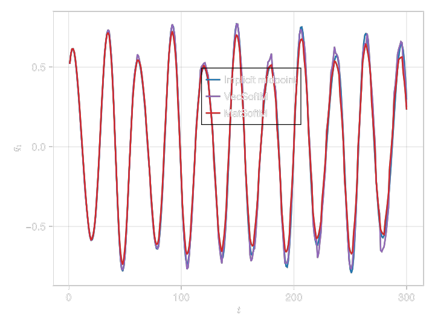

Comparing Matrix and Vector Softmax as Activation Functions in a Transformer
Transformers are usually build with VectorSoftmax as activation function, meaning that the activation function looks at each columns of a matrix (or tensor) independently:
\[\mathrm{softmax}([v^1, v^2, \ldots, v^n]) \equiv \left[ \frac{e^{v^1_i}}{\sum_{i'=1}^de^{v^1_{i'}}}, \frac{e^{v^2_i}}{\sum_{i'=1}^de^{v^2_{i'}}}, \ldots, \frac{e^{v^n_i}}{\sum_{i'=1}^de^{v^n_{i'}}} \right].\]
One can however also use a MatrixSoftmax:
\[\mathrm{Msoftmax}(V) \equiv \frac{e^{V_{ij}}}{\sum_{i,j}e^{V_ij}}.\]
using GeometricMachineLearning
act1 = GeometricMachineLearning.VectorSoftmax()
act2 = GeometricMachineLearning.MatrixSoftmax()
A = [1 2 3; 1 2 3; 1 2 3]3×3 Matrix{Int64}:
1 2 3
1 2 3
1 2 3act1(A)3×3 Matrix{Float64}:
0.333333 0.333333 0.333333
0.333333 0.333333 0.333333
0.333333 0.333333 0.333333act2(A)3×3 Matrix{Float64}:
0.0300102 0.0815762 0.221747
0.0300102 0.0815762 0.221747
0.0300102 0.0815762 0.221747We can now train transformers with these different activation functions in the MultiHeadAttention layers:
using GeometricProblems.CoupledHarmonicOscillator: hodeensemble, default_parameters
const tstep = .3
const n_init_con = 5
# ensemble problem
ep = hodeensemble([rand(2) for _ in 1:n_init_con], [rand(2) for _ in 1:n_init_con]; tstep = tstep)
dl = DataLoader(integrate(ep, ImplicitMidpoint()); suppress_info = true)We now define the architectures and train them:
const seq_length = 4
const batch_size = 1024
const n_epochs = 1000
arch1 = StandardTransformerIntegrator(dl.input_dim; transformer_dim = 20,
n_heads = 4,
L = 1,
n_blocks = 2,
attention_activation = act1)
arch2 = StandardTransformerIntegrator(dl.input_dim; transformer_dim = 20,
n_heads = 4,
L = 1,
n_blocks = 2,
attention_activation = act2)
nn1 = NeuralNetwork(arch1)
nn2 = NeuralNetwork(arch2)
o_method = AdamOptimizer()
o1 = Optimizer(o_method, nn1)
o2 = Optimizer(o_method, nn2)
batch = Batch(batch_size, seq_length)
loss_array1 = o1(nn1, dl, batch, n_epochs; show_progress = false)
loss_array2 = o2(nn2, dl, batch, n_epochs; show_progress = false)
We further evaluate a trajectory with the trained networks for 300 time steps:
